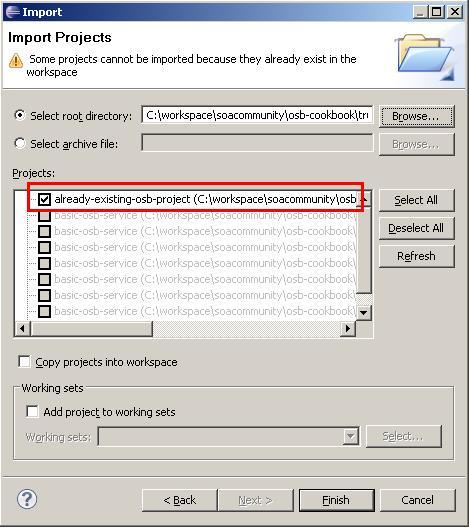

Working with Eclipse OEPE, there is often a need to open an already existing OSB project, which is (no longer) in your Eclipse workspace. This recipe will show how to import an existing project. It should be used in all future recipes, when the Getting ready section asks for importing an existing OSB project as the base for following the recipe.
In Eclipse OEPE, perform the following steps:
Existing in the Select an import source tree list. \chapter-1\getting-ready folder and click on the OK button.
The project is now imported in Eclipse OEPE but will be placed outside of the OSB Configuration and therefore, will have an error marker.
To move it into the OSB Configuration, just drag the imported already-existing-osb-project in the Project Explorer into the osb-cookbook-configuration project. Now the project is ready to be used.
To import the OSB project into Eclipse OEPE, we just used the standard import functionality of Eclipse. In order for that to work, the project needs to have the .project, which is automatically created when using Eclipse OEPE to create an OSB project.
The project has to be moved into the OSB configuration in order to be able to work with it, that is, deploy it to the OSB server. Dragging the project into the OSB configuration is only reflected inside Eclipse, it does not change the location of the files on the disk.